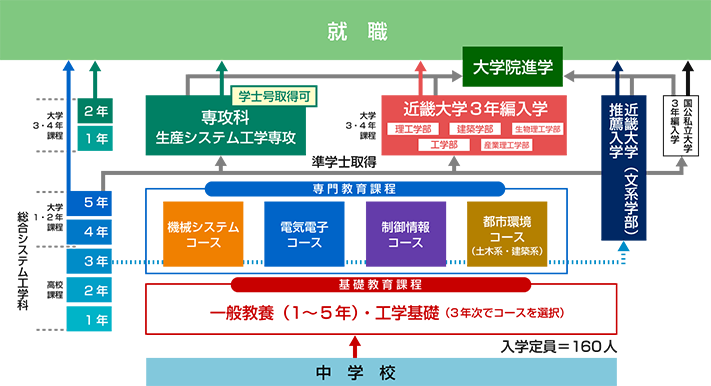

学科・コース・専攻科案内
中学校卒業後、実践的技術者教育を行う高等教育機関で、5年・7年一貫教育システムをとっています。
本科卒業で準学士、専攻科修了で学士となります。
卒業生の７割が就職．殆ど全てが技術者・研究者の道に進み、多くは大企業に勤めています。
また、残り３割が進学．専攻科，国立大学（豊橋技科大，長岡技科大，信州大，福井大，岐阜大，三重大，筑波大，名古屋大，名古屋工業大，他）や近畿大学，立命館大学等に進学します。
中学校卒業後、実践的技術者教育を行う高等教育機関で、5年・7年一貫教育システムをとっています。
本科卒業で準学士、専攻科修了で学士となります。
卒業生の７割が就職．殆ど全てが技術者・研究者の道に進み、多くは大企業に勤めています。
また、残り３割が進学．専攻科，国立大学（豊橋技科大，長岡技科大，信州大，福井大，岐阜大，三重大，筑波大，名古屋大，名古屋工業大，他）や近畿大学，立命館大学等に進学します。